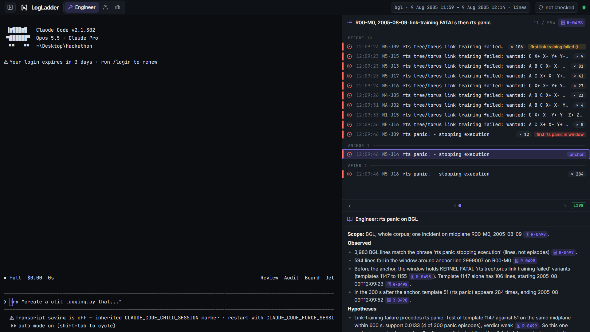

An MCP server over SereneDB that lets Claude answer for an engineer, a team lead and a manager, where every number traces back to a query that actually ran.
BGL supercomputer lines, plus 207k OpenStack lines. The agent can only ask focused questions through tools.
matching lines can be three real events. Counting lines misleads every team lead and manager.
Engineer: what failed? Team lead: what keeps recurring? Manager: what do we fix first?
Role prompts: /engineer, /team_lead, /manager, /investigate.
14 tools: search, timeline, trace, count, trend, recurring problems, rank risks, test hypothesis, check answer, receipts. Every call stores a receipt.
Full-text index with BM25, phrase and fuzzy search, window functions for episodes, aggregates.
2 display tools push evidence built only from stored receipts, so the screen can’t show made-up data.
search_logs → get_timeline → test_hypothesis. Highlighted log lines, anchor, precursor tested in SQL.
Next step: a check to run.
recurring_problems → trend by team → count_by. Episodes, not lines, per owning team.
Next step: what to investigate first.
rank_risks: a transparent score from frequency, spread, trend, severity, labels, with rank stability.
Next step: a decision, no invented cost.
check_answer is plain Python: every number in the draft must match a value in the receipts it cites. Causal words in “Observed” and impact words are flagged.
